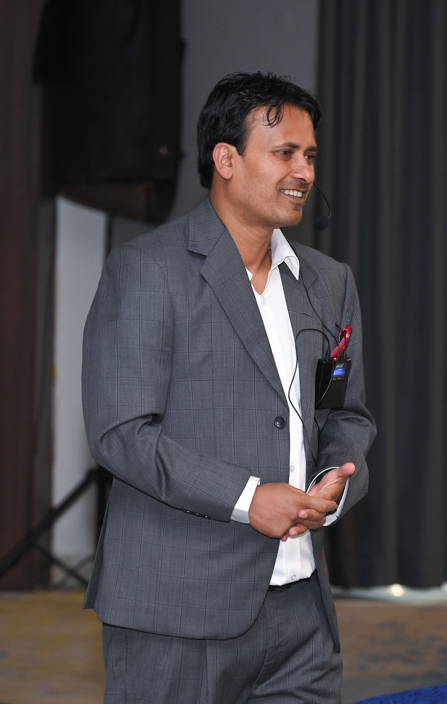

AI Education and Training
Practical training in generative AI, prompt design, AI-supported teaching, verification, privacy, and responsible use.
Explore training →Education · Research · Technology
I work at the intersection of Computer Science Education, AI literacy, curriculum development, and teacher professional learning. My focus is helping educators connect educational ideas with practical, responsible technology use.

What I work on
Practical training in generative AI, prompt design, AI-supported teaching, verification, privacy, and responsible use.
Explore training →Computer science curriculum development, learning-resource design, digital pedagogy.
Explore curriculum work →Education research, programme support, technology planning, and evidence-informed approaches to learning.
Explore research →A record of work across AI education, curriculum development, teacher professional trainings.
Facilitated training for educators and education stakeholders on generative AI tools, prompt design, digital pedagogy, and responsible classroom use.
Consulting to TECSES Finland Based Educational institute for teacher training and digital pedagogy.
Participated in curriculum development work related to coding and AI education for school-level learning.
Contributed as a Reviewer for K-12 computer science curriculum. Add the certificate or official acknowledgement link here if desired.
Conducted research on computer science curriculum from teacher and student perspectives, with a focus on curriculum relevance and improvement.
Selected writing
Research about Computer Science Education and Gen AI.
International Journal of Computer Science Education in Schools, 7(2).
Exploring curriculum relevance, student and teacher perspectives, and opportunities to strengthen school-level CS learning.
Read overview →Investigating how AI tools may support learning, problem-solving, and responsible classroom practice.
Explore research interests →Beyond the classroom
Education is more than the delivery of information. It can connect technical knowledge with culture, ethics, creativity, reflection, and the lived experiences of learners.
Curriculum analysis, design, and student-centred learning.
Explore →Questions, notes, and developing research interests.
Explore →Reflection on education, society, and human development.
Explore →Personal reflection on awareness, values, and meaning.
Explore →Start a conversation
I welcome thoughtful collaboration with educators, researchers, institutions, and learning organisations.